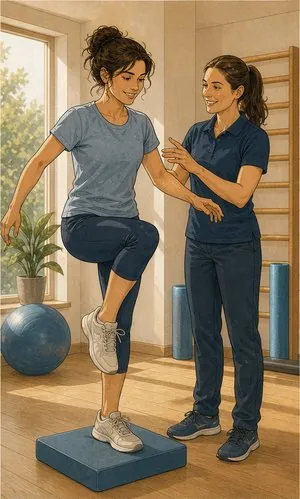

Acidentes pessoais
Há acidentes que não acontecem na estrada nem ao serviço: num treino, numas escadas, numa caminhada ao domingo. É esse espaço que este seguro cobre.
O que pode incluir
Para o que acontece
fora das outras apólices.
Um seguro simples e barato: cobre lesões corporais por acidente, a qualquer hora e em qualquer lugar — ou só durante determinada atividade. Serve o espaço em branco entre o seguro do carro, o do trabalho e o de saúde.
Morte por acidente
Capital pago aos beneficiários. Nalguns planos duplica em caso de acidente de viação.
Invalidez permanente
Indemnização proporcional ao grau de desvalorização atribuído por perícia médica.
Despesas de tratamento
Consultas, exames, fisioterapia e internamento resultantes do acidente.
Incapacidade temporária
Subsídio diário durante a baixa. Decisivo para quem não recebe se não trabalhar.
Despesas de funeral
Capital autónomo, disponível de imediato, sem esperar pela regularização do processo.
Assistência em viagem
Repatriamento e apoio médico fora de casa, consoante o plano.

Sem letra pequena
Onde acaba
a cobertura.
Uma leitura geral, para chegar à conversa com ideias claras. Cada apólice tem as suas condições — e lemo-las consigo.
Ver o que está e o que não está coberto lista indicativa
Normalmente coberto
- Acidentes em qualquer circunstância, nos planos de cobertura 24 horas.
- Prática desportiva amadora, na maioria das modalidades.
- Acidentes escolares e em atividades extracurriculares.
- Despesas médicas decorrentes do acidente, até ao capital contratado.
- Invalidez permanente, ainda que parcial, mediante grau atribuído.
Normalmente excluído
- Doença — este seguro cobre acidentes, não patologias.
- Desportos de alto risco não declarados: paraquedismo, alpinismo, automobilismo.
- Competição profissional, salvo apólice específica.
- Acidentes de trabalho, que exigem seguro próprio e obrigatório.
- Lesões pré-existentes ou agravamento de lesões anteriores.
- Atos sob influência de álcool ou estupefacientes.
Para quem
Filhos no desporto federado
O seguro do clube costuma ser mínimo e limitado a treinos e jogos oficiais. Um acidentes pessoais 24 horas cobre o resto do dia — e é dos seguros mais baratos que existem.
Trabalhador independente
Se não trabalhar, não recebe. A incapacidade temporária com subsídio diário é, para muitos recibos verdes, mais importante do que o próprio capital por morte.
Reformados e maiores de 65
As quedas são a causa número um de internamento nesta faixa etária. Há planos desenhados para o efeito, com capitais para tratamento e apoio domiciliário.
Informação resumida e de caráter geral. As condições que valem são as da informação pré-contratual e contratual do produto proposto.
Quem define coberturas, capitais e exclusões é a companhia. Veja a página oficial do produto e traga-nos as dúvidas.
Perguntas frequentes
O que nos
perguntam ao balcão.
Qual é a diferença para o seguro de saúde?
O de saúde cobre doença e acidente, com rede e coparticipações, e serve para o dia-a-dia. O de acidentes pessoais cobre só acidentes, mas paga capitais por morte e invalidez — o que o de saúde não faz.
São complementares. Muita gente tem um e precisaria dos dois.
O seguro do clube do meu filho não chega?
Raramente. O seguro desportivo obrigatório tem capitais mínimos definidos por lei e cobre sobretudo treinos e competições. Fora disso — a caminho do treino, na escola, em casa — não responde.
Cobre acidentes no estrangeiro?
Na maioria dos planos sim, em viagens de duração limitada. Se passa longas temporadas fora, convém declará-lo para que não haja surpresas.
Como se calcula a indemnização por invalidez?
Por perícia médica, que atribui uma percentagem de desvalorização segundo uma tabela legal. A indemnização é essa percentagem aplicada ao capital contratado.
Há limite de idade?
A maioria das companhias aceita subscrições até aos 65 ou 70 anos e mantém o contrato depois disso, por vezes com capitais reduzidos. Há planos específicos para idades mais avançadas.
Um seguro barato
para o dia mau.
Diga-nos quem quer proteger e em que atividades. Montamos o plano em poucos minutos.
Sem compromisso. Não usamos os seus dados para mais nada.